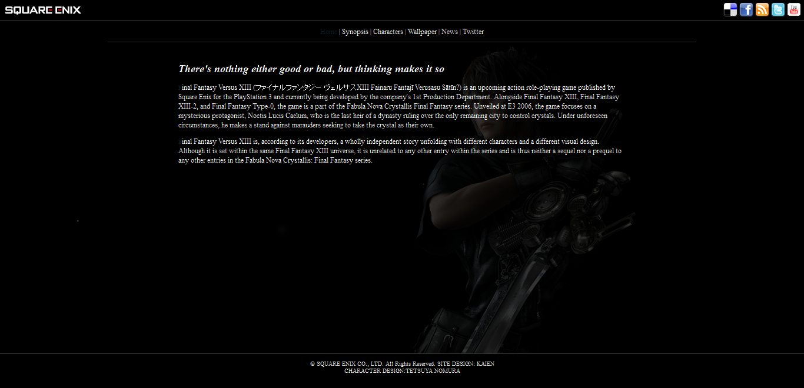

click and grab for zoom!

Did I tell you how I love the Final Fantasy Series? Yeap, here's another site I made using jQuery
Has a sliding panel which could be navigated by the top link, Twitter, RSS feeds and LightBox!
Developed with Dreamweaver, for one of the modules in my school